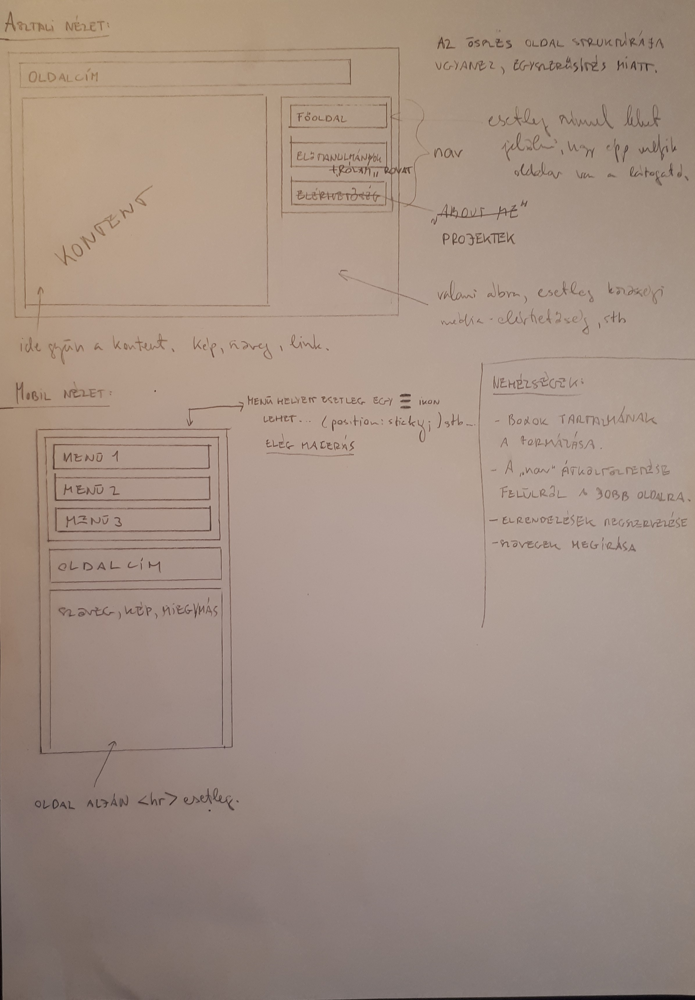

Az oldal tervét a fent látható kép tartalmazza. Az átjavításokat, áthúzásokat direkt hagytam benne, így talán szemléletesebb. A fenti dokumentum nem tartalmazza a dizájnbeli elképzeléseket, azért, mert azokat a készítés közben találtam ki. Az oldal asztali és mobil nézetben is a lapon vázolt struktúrát követi. Törekedtem az egyszerű és letisztult kinézetre és az egyszerű kezelhetőségre, átláthatóságra.
Leginkább elrendezésbeli nehézségeim adódtak, például a "div"-ek megfelelő elrendezése, az, hogy az oldal "összenyomásra" a tervezett módon reagáljon. Ezutóbbi probléma emésztette fel talán a legtöbb időt, többször kellett is konzultálnom, mert elakadtam. Aztán egyszer csak ráéreztem, és onnan már könnyen ment.
A projektek kártyáinak formázása is több időbe telt, mint vártam. A fenti lapon feltüntetett problémák is ide tartoznak, az elején sokat dolgoztam azon hogy a menü működjön és a jobb oldalon legyen, illetve nem voltak ötleteim arról, hogy milyen tartalommal töltsem fel az oldalakat. Probléma volt az önéletrajz jellegű rész tördelése, először a "pre" taggel próbálkoztam, ami habár megtartja a tabulátorértékeket, nehezen alakítható, ezért nem bizonyult jó megoldásnak, helyette a táblázatos kialakítás mellett döntöttem.
Habár ezek nem látszanak már, de a régi koncepcióban más színeket használtam, amelyek nem voltak összhangban, illetve más volt a háttér is. Alapból a háttér egy galaxis képe volt, melyet lecseréltem, mert zavarónak és komolytalannak ítéltem. Az eredeti élénkzöld betűszín is le lett cserélve, nyilvánvaló okokból, helyette egy kellemesebb árnyalatú aranysárga szín lett a betűszín. A weboldal alapvető struktúrájában nem történt változtatás, maradt a koncepció az elejétől fogva. A tartalom elrendezésében történtek változások, alapból például nem terveztem kártyákat berakni a projektekhez.